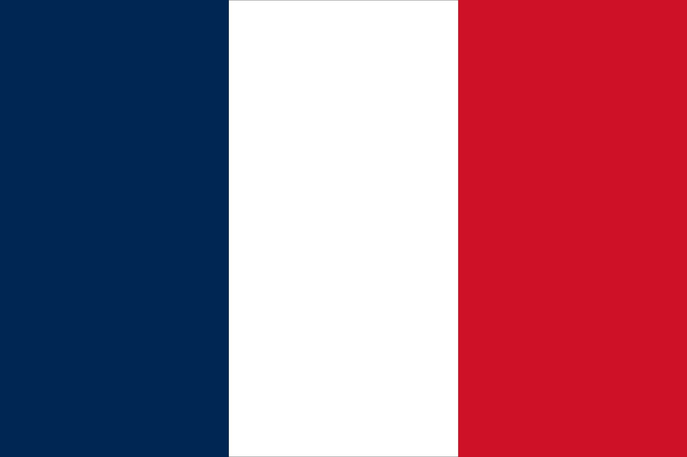

English is a West Germanic language of the Indo-European language family, with its earliest forms spoken by the inhabitants of early medieval England. It is named after the Angles, one of the ancient Germanic peoples that migrated.

Spanish (español or castellano, Castilian) is a Romance language of the Indo-European language family that evolved from colloquial Latin spoken on the Iberian Peninsula. Today, it is a global language with more than 500 million native speakers, mainly in the Americas and Spain.

Of the languages of France, French is the sole official language according to the second article of the French Constitution. French, a Gallo-Romance language, is spoken by nearly the entire population of France.